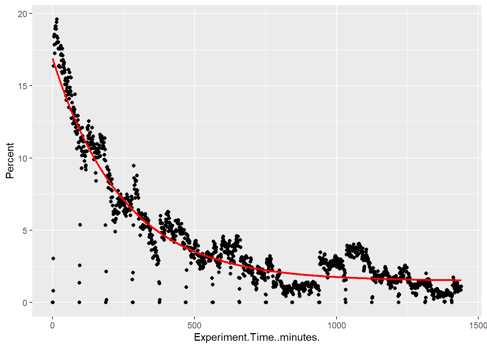

Using the outputs from my Flongle run of Group1, Library 1, I want to use the rate of pore decay and cumulative sequencing output to extrapolate how much output to expect from other flow cells.
Pore activity
Look at the output csv of pore activity stats:
library(dplyr)
Warning: package 'dplyr' was built under R version 4.2.3
Attaching package: 'dplyr'
The following objects are masked from 'package:stats':
filter, lag
The following objects are masked from 'package:base':
intersect, setdiff, setequal, union
After comparing the pore_activity.csv labels to those included in the pore activity summary plots, I’m pretty sure that the following labels are equivalent (pore_activity.csv label = plot label)
adapter = adapter
disabled = channel disabled
locked = ?
multiple = multiple
no_pore = no pore
pending_manual_reset = ?
pending_mux_change = ? pore = pore available
saturated = saturated strand = sequencing
unavailable = unavailable
unblocking = active feedback
unclassified = unclassified
unclassified_following_reset = ?
unknown_negative = out of range - low
unknown_positive = out of range - high
zero = zero
Fit pore decay and output functions
I want to extract a function for the percent of pores that are sequencing over time. I expect a roughly exponential drop of pore activity over time
pore_sequencing <- pore_activity %>%filter(Channel.State =="strand")# Fit exponential decaystart_vals <-list(a =max(pore_sequencing$Percent), b =0.01, c =min(pore_sequencing$Percent))model <-nls(Percent ~ a *exp(-b * Experiment.Time..minutes.) + c,data = pore_sequencing, start = start_vals)#summary(model)# Predict and plotpore_sequencing$fit <-predict(model)pore_sequencing %>%ggplot(., aes(x = Experiment.Time..minutes., y = Percent)) +geom_point() +geom_line(aes(y = fit), color ="red", size =1)
Warning: Using `size` aesthetic for lines was deprecated in ggplot2 3.4.0.
ℹ Please use `linewidth` instead.

cat("\n")
cat("\n")
cat("Best fit line for percent of pores that are actively sequencing as a function of time:", "\n")
Best fit line for percent of pores that are actively sequencing as a function of time:
Now I want to use these to estimate MinION output based on a different starting number of pores.
Note
Note that these estimates will be based on the assumption that MinION pores degrade at the same rate as these Flongle pores which, based on rather negative experiences posted to the Nanopor community, may not be the case. People have reported that their v10 Flongles degrade much more quickly than both older Flongle chemistry and Minion flow cells.
# Given## Starting number of poresPref <-44## Cumulative output functionCref <-function(t) { -120848296*exp(-0.002* t) +127537896 } # bases# Prediction for a new runpredict_yield <-function(P0, T_minutes) {Cref(T_minutes) * (P0 / Pref) # bases}# Convenience: return Gbpredict_yield_Gb <-function(P0, T_minutes) {predict_yield(P0, T_minutes) /1e9}# Run a MinION flow cell with 1200 pores for 3 days (no washes)predict_yield_Gb(1200, 4320) # Gb
[1] 3.477723
# Run a MinION flow cell with 1200 pores for 3 days, with wash/reloads that recover/maintain half of pores each timepredict_yield_Gb(1200, 1440) +predict_yield_Gb(600, 1440) +predict_yield_Gb(300, 1440) # Gb
[1] 5.763264
In the future, if I find that MinION pores decay at a different rate, I can use the below code to incorporate a different decay function :
While I doubt the MinION fow cells will degrade as quickly as the Flongles, the predicted output for a MinION flow cell (~3.5Gb) is far below what I had been previously estimating (30Gb). As such, I’m going to drop from multiplexing 4 samples per flow cell to 3 samples per flow cell, to try to get more coverage for each.